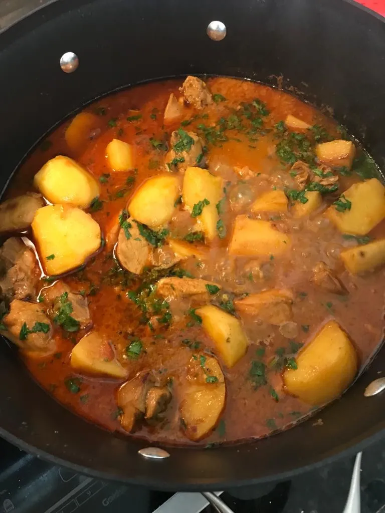

Bangladeshi chicken curry

Description
Like most Bangladeshi families we lived in a chaotic big extended family and always
had large groups over for holiday meals. My mom was the best cook – or most enthusiastic
at least – in the family. Bangladeshi mom’s always looked for ways to stretch simple curries
to feed a huge tribe. Protein dishes always included one or two vegetables. One of her best comfort food
dishes was Murgir Aloo Jhol (Chicken and Potato in Curry Gravy).
- bone-in whole chicken cut into medium sized pieces
- 4 large large potatoes cut in half
- 1 medium tomato chopped
- 3 medium onion thinly sliced
- 1 teaspoon ginger paste can substitute fresh chopped
- 1 teaspoon garlic paste can substitute fresh chopp
- 1 bayleaf
- 6 whole peppercorn (alt use ½ tablespoon crushed
- 2 whole Cloves
- 2 Cardamom Pods
- 1 teaspoon turmeric (half used to sauce potatoes
- 1 tablespoon Curry Powder
- 1/2 teaspoon pantch puran seed
- 1 teaspoon red chilli powder
- 1 teaspoon Cumin Powder
- 1 teaspoon Coriander
- 1 teaspoon garam Masala
- 4-5 green chillies chopped
- 1/2 cup olive oil
- 2 cups Water
- 1/4 cup cilantro chopped
- Heat 4 or 5 tablespoon of oil in a pan. Fry the cut potatoes with ½ tsp of turmeric over medium heat, let them turn golden brown in color, remove and keep aside.
- Add the remaining oil in the same pan to temper the bay leaf, cardamom, peppercorn, cloves, cinnamon, and panch phoran.
- Add sliced onion, fry until light golden brown in color. This step is essential to give a rich color and texture to the gravy.
- Add the ginger and garlic paste, and cook until the raw smell is gone.
- Add the remaining spices: salt, cumin powder, coriander powder, curry powder, chilli powder, garam masala, and tomatoes. Cook over medium heat until the masala starts separating from the oil; this typically takes 10 minutes.
- Add the chicken pieces and green chillies. Cover and cook over medium heat for 10 minutes. At this point the chicken will start releasing its juices.
- Add in the fried potatoes and cook for 5 minutes on low heat. At this point add in 2 cups of water. I prefer to use boiling hot water. Cook for 10 minutes on low
- You can check the spice and salt level at this time. You can add more salt or red chilli powder if you want to make the curry spicier.
- Give the curry 5 minutes to rest. Garnish with chopped cilantro and serve with steamed white rice.